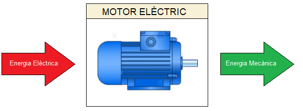
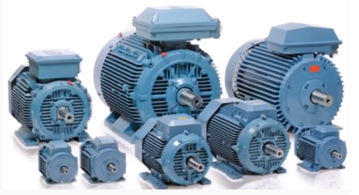
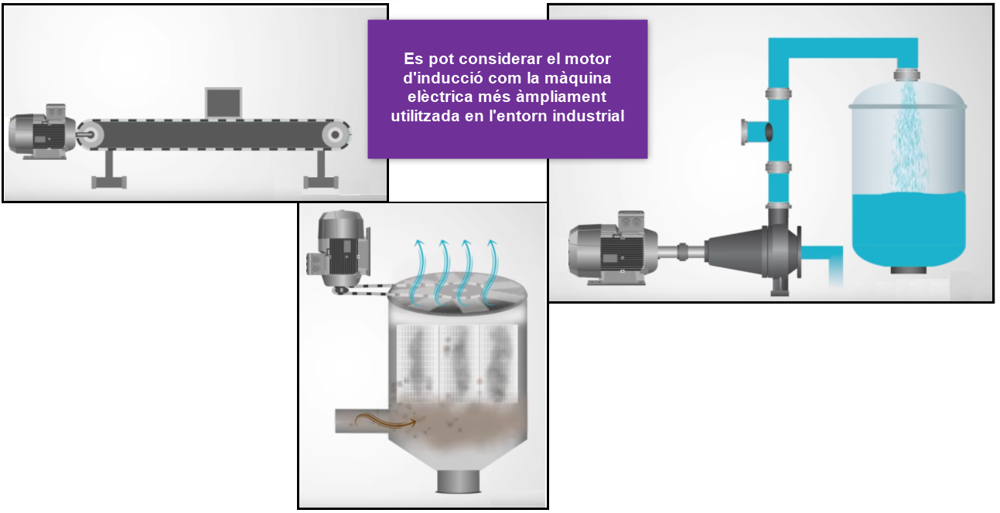

Introducció

Un motor elèctric és una màquina que converteix de manera eficient l'energia elèctrica en energia mecànica, es a dir, produeix treball útil.
Encara que existeixen diferents tipus de motors elèctrics, nosaltres ens centrarem únicament en els motors d'inducció.

Els motors d'inducció es poden incloure entre les màquines elèctriques més fiables que existeixen, ja que desenvolupen la seva funció durant molts anys amb intervencions de manteniment molt reduïdes. Aquests motors s'utilitzen en els sectors industrials més variats, com ara: la indústria alimentària, química, metal·lúrgica, paperera, minera. instal·lacions de tractament d'aigües, ...
Algunes de les aplicacions industrials dels motors d'inducció són:
- els sistemes d'elevació, com els ascensors o muntacàrregues
- els sistemes de transport com les cintes transportadores
- els sistemes de ventilació i climatització
- les bombes i els compressors.
- .........

Licencia: licencia de software libre GPL